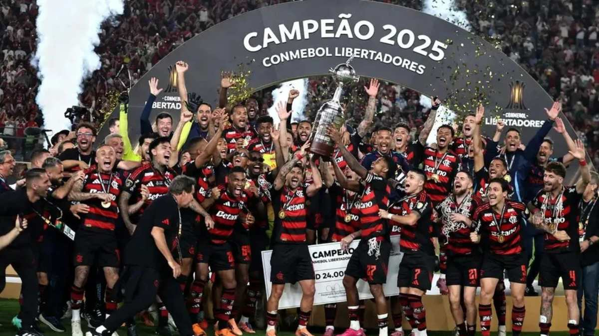

Clube de Regatas do Flamengo
Uma Nação de Paixão, Glórias e Tradição

A Fundação (1895)
O Clube de Regatas do Flamengo foi fundado em 17 de novembro de 1895, na praia do Flamengo, na cidade do Rio de Janeiro. Originalmente, o clube nasceu com o objetivo de se dedicar à prática do remo, esporte muito popular na época. Seus fundadores foram jovens remadores insatisfeitos com a gestão de outro clube da cidade.
A Chegada do Futebol
Embora tenha começado nas águas, o futebol entrou para a história do clube em 1911, após uma cisão no Fluminense Football Club que levou vários jogadores a se transferirem para o Flamengo. A estreia oficial da equipe de futebol aconteceu em 3 de maio de 1912, com uma vitória marcante de 16 a 0 sobre o Mangueira.
A Era de Ouro e o Mundo (1981)
A década de 1980 marcou o período mais glorioso da história rubro-negra. Liderados em campo pelo ícone Zico, o Flamengo conquistou sua primeira Copa Libertadores da América e o título do Mundial Interclubes em 1981, vencendo o poderoso Liverpool (Inglaterra) por 3 a 0 no Japão, além de múltiplos Campeonatos Brasileiros.
Principais Conquistas
- Mundial Interclubes: 1 título (1981)
- Copa Libertadores da América: 3 títulos (1981, 2019 e 2022)
- Cam
História do flamengo Meu primeiro blog
kelly de oliveira
Vou falar sobre o time de futebol do flamengo
Clube de Regatas do Flamengo
Uma Nação de Paixão, Glórias e Tradição
A Fundação (1895)
O Clube de Regatas do Flamengo foi fundado em 17 de novembro de 1895, na praia do Flamengo, na cidade do Rio de Janeiro. Originalmente, o clube nasceu com o objetivo de se dedicar à prática do remo, esporte muito popular na época. Seus fundadores foram jovens remadores insatisfeitos com a gestão de outro clube da cidade.
A Chegada do Futebol
Embora tenha começado nas águas, o futebol entrou para a história do clube em 1911, após uma cisão no Fluminense Football Club que levou vários jogadores a se transferirem para o Flamengo. A estreia oficial da equipe de futebol aconteceu em 3 de maio de 1912, com uma vitória marcante de 16 a 0 sobre o Mangueira.
A Era de Ouro e o Mundo (1981)
A década de 1980 marcou o período mais glorioso da história rubro-negra. Liderados em campo pelo ícone Zico, o Flamengo conquistou sua primeira Copa Libertadores da América e o título do Mundial Interclubes em 1981, vencendo o poderoso Liverpool (Inglaterra) por 3 a 0 no Japão, além de múltiplos Campeonatos Brasileiros.
Principais Conquistas
- Mundial Interclubes: 1 título (1981)
- Copa Libertadores da América: 3 títulos (1981, 2019 e 2022)
- Campeonato Brasileiro: Múltiplas conquistas nacionais oficializadas pela CBF
- Campeonato Carioca: Maior vencedor da história do torneio estadual
- Campeonato Carioca: Maior vencedor da história do torneio estadual